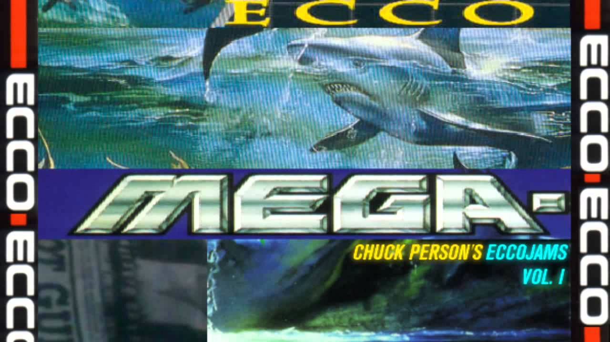

Beginnings of Vaporwave
Vaporwave was born on the internet, on forums such as 4chan and Reddit. It is an expression of today's world through the lens of our perceived nostalgia of past decades - whether we lived through them or not. The beginnings of this tone, however, can concretely be credited to a 2010 album by "Chuck Person", an alias of a Daniel Lopatin. "Eccojams Vol 1." Set the stage for the genre's now iconic style: Melancholic, fuzzy samplings of old, well known songs, often slowed down or completely reversed.
Though the album largely went unnoticed, it went on to inspire vaporwave's most iconic album to date: FLORAL SHOPPE by MACINTOSH PLUS in 2011. While it built heavily on the slow, meandering sounds of Eccojams Vol 1, its sampling was firmly rooted in generic pop of the 80s and 90s, giving it and vaporwave it's distinct sound. Like all things in the modern era, vaporwave seems to evolve and change before the eye. Vaporwave strives towards making listeners feel intangible feelings. It strips away any and all preconceptions surrounding it- even artist names seek to do this, with names like "CVLTVRΣ", "The worst:" and "VHS DREAMS". Through isolating themselves from any cultural ties and foregoing norms, they seek to create something standing on its own.